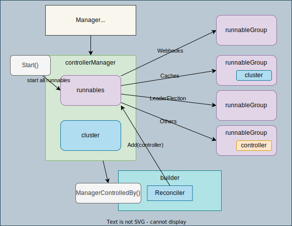

Manager

The main role of Manager is 1. Manage the lifecycle of a set of controllers (registration, start and stop) 1. Provide the shared resources (Kubernetes API server client, cache, etc.)
The registration of a controller is done by Builder.
types
1. Manager Interface
// Manager initializes shared dependencies such as Caches and Clients, and provides them to Runnables.
// A Manager is required to create Controllers.
type Manager interface {
cluster.Cluster
Add(Runnable) error
Elected() <-chan struct{}
AddMetricsExtraHandler(path string, handler http.Handler) error
AddHealthzCheck(name string, check healthz.Checker) error
AddReadyzCheck(name string, check healthz.Checker) error
Start(ctx context.Context) error
GetWebhookServer() *webhook.Server
GetLogger() logr.Logger
GetControllerOptions() v1alpha1.ControllerConfigurationSpec
}
2. controllerManager
type controllerManager struct {
sync.Mutex
started bool
stopProcedureEngaged *int64
errChan chan error
runnables *runnables
// cluster holds a variety of methods to interact with a cluster. Required.
cluster cluster.Cluster
...
}
3. Runnable interface
type Runnable interface {
Start(context.Context) error
}
4. runnables
type runnables struct {
Webhooks *runnableGroup
Caches *runnableGroup
LeaderElection *runnableGroup
Others *runnableGroup
}
type runnableGroup struct {
ctx context.Context
cancel context.CancelFunc
start sync.Mutex
startOnce sync.Once
started bool
startQueue []*readyRunnable
startReadyCh chan *readyRunnable
stop sync.RWMutex
stopOnce sync.Once
stopped bool
errChan chan error
ch chan *readyRunnable
wg *sync.WaitGroup
}
types of runnables:
WebhooksCachesLeaderElectionOthers
How Manager is initialized by New
1. Set default values for Options fields wiht setOptionsDefaults
manager, err := ctrl.NewManager(ctrl.GetConfigOrDie(), ctrl.Options{})
options = setOptionsDefaults(options)
| name | value | where is the option used |
|---|---|---|
| newResourceLock | leaderelection.NewResourceLock | setLeaderElectionConfig |
| newRecorderProvider | intrec.NewProvider | New to create recorderProvider |
| EventBroadcaster | func() (record.EventBroadcaster, bool) {return record.NewBroadcaster(), true} |
as an option for newRecorderProvider in New |
| newMetricsListener | metrics.NewListener | New to create metricsListener |
| LeaseDuration | *defaultLeaseDuration | setLeaderElectionConfig |
| RenewDeadline | *defaultRenewDeadline | setLeaderElectionConfig |
| RetryPeriod | *defaultRetryPeriod | setLeaderElectionConfig |
| ReadinessEndpointName | defaultReadinessEndpoint | |
| LivenessEndpointName | defaultLivenessEndpoint | |
| newHealthProbeListener | defaultHealthProbeListener | |
| GracefulShutdownTimeout | *defaultGracefulShutdownPeriod | |
| Logger | log.Log | |
| BaseContext | defaultBaseContext |
※ New in the table means Manager.New
2. Initialize a controllerManager
- Initialize Cluster, which provides methods to interact with Kubernetes cluster
For more details, please check cluster.
cluster, err := cluster.New(config, func(clusterOptions *cluster.Options) { clusterOptions.Scheme = options.Scheme clusterOptions.MapperProvider = options.MapperProvider clusterOptions.Logger = options.Logger clusterOptions.SyncPeriod = options.SyncPeriod clusterOptions.Namespace = options.Namespace clusterOptions.NewCache = options.NewCache clusterOptions.NewClient = options.NewClient clusterOptions.ClientDisableCacheFor = options.ClientDisableCacheFor clusterOptions.DryRunClient = options.DryRunClient clusterOptions.EventBroadcaster = options.EventBroadcaster //nolint:staticcheck })Clusteris also a runnable. -
Initialize other necessary things like
recordProvider,runnables, etc. -
Initialize
controllerManager&controllerManager{ ... cluster: cluster, runnables: runnables, ... recorderProvider: recorderProvider, }
3. Bind a Controller to the Manager
Bind a Controller to the Manager using NewControllerManagedBy(alias for builder.ControllerManagedBy).
err = ctrl.
NewControllerManagedBy(manager). // Create the Controller
For(&appsv1.ReplicaSet{}). // ReplicaSet is the Application API
Owns(&corev1.Pod{}). // ReplicaSet owns Pods created by it
Complete(&ReplicaSetReconciler{Client: manager.GetClient()})
Internally, builder.Build create a new controller and add it to manager.runnables.Others by Manager.Add(Runnable).
You can also check Builder and Internal process of adding a Controller to a Manager
4. controllerManager.Start() calls runnables.xxx.Start() to start all runnables.
// (1) Add the cluster runnable.
if err := cm.add(cm.cluster); err != nil {
...
// (2) First start any webhook servers
if err := cm.runnables.Webhooks.Start(cm.internalCtx); err != nil {
...
// (3) Start and wait for caches.
if err := cm.runnables.Caches.Start(cm.internalCtx); err != nil {
...
// (4) Start the non-leaderelection Runnables after the cache has synced.
if err := cm.runnables.Others.Start(cm.internalCtx); err != nil {
// (5) Start the leader election and all required runnables.
if err := cm.startLeaderElection(ctx); err != nil {
...
if err := cm.startLeaderElectionRunnables(); err != nil {
...
Controller will be in runnables.Others and you can check the actual Start logic in controller.
Internal process of adding a Controller to a Manager
controllerManager.Add(Runnable): gets lock and callsadd(runnable).- cm.SetFields(r)
if err := cm.cluster.SetFields(i); err != nil { return err } if _, err := inject.InjectorInto(cm.SetFields, i); err != nil { return err } if _, err := inject.StopChannelInto(cm.internalProceduresStop, i); err != nil { return err } if _, err := inject.LoggerInto(cm.logger, i); err != nil { return err }- cluster.SetFields set dependencies on the object that implements the inject interface. Specifically set the following cluster's field to the runnable (controller)
config(inject.ConfigInto(c.config, i))client(inject.ClientInto(c.client, i))apiReader(inject.APIReaderInto(c.apiReader, i))scheme(inject.SchemeInto(c.scheme, i))cache(inject.CacheInto(c.cache, i))mapper(inject.MapperInto(c.mapper, i))
cm.SetFieldsis set tocontroller.SetFieldsviaInjectorInto. (details: inject) <-controller.SetFieldswill be used for source, event handler and predicates in Watch.StopChannelIntoandLogger.
- cluster.SetFields set dependencies on the object that implements the inject interface. Specifically set the following cluster's field to the runnable (controller)
- cm.runnables.Add(r)
Add
type runnables struct { Webhooks *runnableGroup Caches *runnableGroup LeaderElection *runnableGroup Others *runnableGroup }rbased on the type.func (r *runnables) Add(fn Runnable) error { switch runnable := fn.(type) { case hasCache: // check if `GetCache() exists return r.Caches.Add(fn, func(ctx context.Context) bool { return runnable.GetCache().WaitForCacheSync(ctx) }) case *webhook.Server: // check if webhook.Server type return r.Webhooks.Add(fn, nil) case LeaderElectionRunnable: // check if `NeedLeaderElection() exists if !runnable.NeedLeaderElection() { return r.Others.Add(fn, nil) } return r.LeaderElection.Add(fn, nil) default: return r.LeaderElection.Add(fn, nil) } }
- cm.SetFields(r)
Manager.GetClient() and GetScheme()
- The client, scheme and more are initialized and stored in the cluster when a Manager is created.
- The client, scheme and more are directly got from
cm.cluster.GetXXX() - The client got by
GetClient()is passed toReconcilerso you can manipulate objects in the Reconcile function.
Example
-
Initialize with
NewManager.mgr, err := ctrl.NewManager(ctrl.GetConfigOrDie(), ctrl.Options{})You can configure Options based on your requirements. example:
{ Scheme: scheme, MetricsBindAddress: metricsAddr, Port: 9443, HealthProbeBindAddress: probeAddr, LeaderElection: enableLeaderElection, LeaderElectionID: "63ffe61d.example.com", } -
Define a simple Reconciler
podReconciler := reconcile.Func(func(ctx context.Context, req reconcile.Request) (reconcile.Result, error) { fmt.Printf("podReconciler is called for %v\n", req) return reconcile.Result{}, nil })For more details about Reconciler, you can check reconciler.
-
Set up Controller with
NewControllerManagedByctrl.NewControllerManagedBy(mgr). // returns controller Builder For(&corev1.Pod{}). // defines the type of Object being reconciled Complete(podReconciler) // Complete builds the Application controller, and return errorFor: define which resource to monitor.Complete: pass the reconciler to complete the controller.- Internally,
NewControllerManagedByreturns controller builder. - Controller builder calls two functions in
Complete(reconcile.Reconciler)- doController: Set controller to the builder
blder.ctrl, err = newController(controllerName, blder.mgr, ctrlOptions) - doWatch: call
blder.ctrl.Watch(src, hdler, allPredicates...)forFor,Owns, andWatches.
- doController: Set controller to the builder
Run
-
Run (initialize a Manager with podReconciler & deploymentReconciler)
go run main.go 2022-09-06T06:27:08.255+0900 INFO controller-runtime.metrics Metrics server is starting to listen {"addr": ":8080"} 2022-09-06T06:27:08.255+0900 INFO Starting server {"path": "/metrics", "kind": "metrics", "addr": "[::]:8080"} 2022-09-06T06:27:08.255+0900 INFO Starting EventSource {"controller": "pod", "controllerGroup": "", "controllerKind": "Pod", "source": "kind source: *v1.Pod"} 2022-09-06T06:27:08.255+0900 INFO Starting Controller {"controller": "pod", "controllerGroup": "", "controllerKind": "Pod"} 2022-09-06T06:27:08.255+0900 INFO manager-examples RunnableFunc is called 2022-09-06T06:27:08.255+0900 INFO Starting EventSource {"controller": "deployment", "controllerGroup": "apps", "controllerKind": "Deployment", "source": "kind source: *v1.Deployment"} 2022-09-06T06:27:08.255+0900 INFO Starting Controller {"controller": "deployment", "controllerGroup": "apps", "controllerKind": "Deployment"} 2022-09-06T06:27:08.356+0900 INFO Starting workers {"controller": "pod", "controllerGroup": "", "controllerKind": "Pod", "worker count": 1} 2022-09-06T06:27:08.357+0900 INFO Starting workers {"controller": "deployment", "controllerGroup": "apps", "controllerKind": "Deployment", "worker count": 1} 2022-09-06T06:27:08.357+0900 INFO manager-examples podReconciler is called {"req": "kube-system/coredns-6d4b75cb6d-jtg59"} 2022-09-06T06:27:08.357+0900 INFO manager-examples podReconciler is called {"req": "local-path-storage/local-path-provisioner-9cd9bd544-g89rs"} 2022-09-06T06:27:08.357+0900 INFO manager-examples podReconciler is called {"req": "kube-system/kube-scheduler-kind-control-plane"} 2022-09-06T06:27:08.357+0900 INFO manager-examples podReconciler is called {"req": "kube-system/kube-controller-manager-kind-control-plane"} 2022-09-06T06:27:08.357+0900 INFO manager-examples podReconciler is called {"req": "kube-system/kube-proxy-7jsn6"} 2022-09-06T06:27:08.357+0900 INFO manager-examples podReconciler is called {"req": "kube-system/coredns-6d4b75cb6d-k68r5"} 2022-09-06T06:27:08.357+0900 INFO manager-examples podReconciler is called {"req": "kube-system/etcd-kind-control-plane"} 2022-09-06T06:27:08.357+0900 INFO manager-examples podReconciler is called {"req": "kube-system/kube-apiserver-kind-control-plane"} 2022-09-06T06:27:08.357+0900 INFO manager-examples podReconciler is called {"req": "kube-system/kindnet-6dj6q"} 2022-09-06T06:27:08.358+0900 INFO manager-examples deploymentReconciler is called {"req": "kube-system/coredns"} 2022-09-06T06:27:08.358+0900 INFO manager-examples deploymentReconciler is called {"req": "local-path-storage/local-path-provisioner"}The reconcile functions are called when cache is synced.
-
Create a Pod
kubectl run nginx --image=nginxYou'll see the following logs:
1. Delete the Pod2022-09-06T07:16:26.400+0900 INFO manager-examples podReconciler is called {"req": "default/nginx"} 2022-09-06T07:16:26.519+0900 INFO manager-examples podReconciler is called {"req": "default/nginx"} 2022-09-06T07:16:26.660+0900 INFO manager-examples podReconciler is called {"req": "default/nginx"} 2022-09-06T07:16:32.547+0900 INFO manager-examples podReconciler is called {"req": "default/nginx"}kubectl delete pod nginxYou'll see the logs again. 1. Create a Deployment
kubectl create deploy nginx --image=nginx2022-09-06T07:17:04.963+0900 INFO manager-examples deploymentReconciler is called {"req": "default/nginx"} 2022-09-06T07:17:05.281+0900 INFO manager-examples deploymentReconciler is called {"req": "default/nginx"} 2022-09-06T07:17:05.320+0900 INFO manager-examples podReconciler is called {"req": "default/nginx-8f458dc5b-lnkqz"} 2022-09-06T07:17:05.341+0900 INFO manager-examples podReconciler is called {"req": "default/nginx-8f458dc5b-lnkqz"} 2022-09-06T07:17:05.342+0900 INFO manager-examples deploymentReconciler is called {"req": "default/nginx"} 2022-09-06T07:17:05.432+0900 INFO manager-examples podReconciler is called {"req": "default/nginx-8f458dc5b-lnkqz"} 2022-09-06T07:17:05.461+0900 INFO manager-examples deploymentReconciler is called {"req": "default/nginx"} 2022-09-06T07:17:08.630+0900 INFO manager-examples podReconciler is called {"req": "default/nginx-8f458dc5b-lnkqz"} 2022-09-06T07:17:08.674+0900 INFO manager-examples deploymentReconciler is called {"req": "default/nginx"} -
Delete the Deployment
kubectl delete deploy nginxYou'll see the logs again.